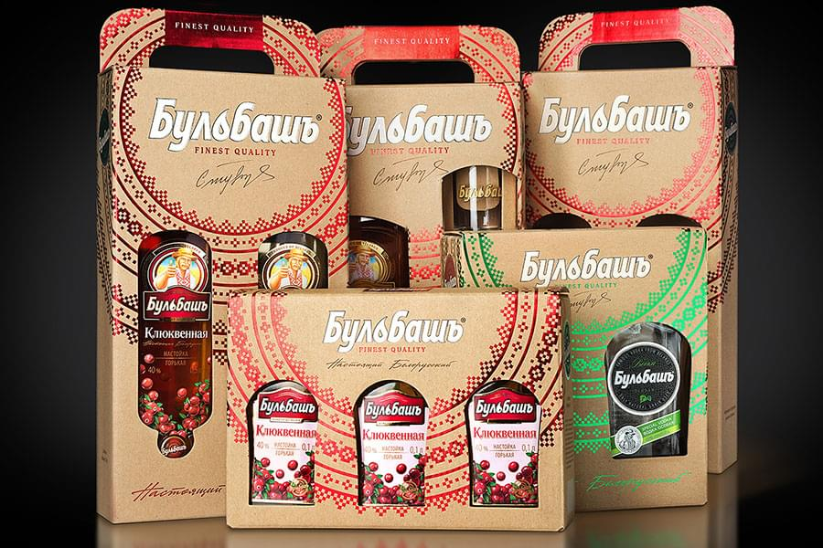
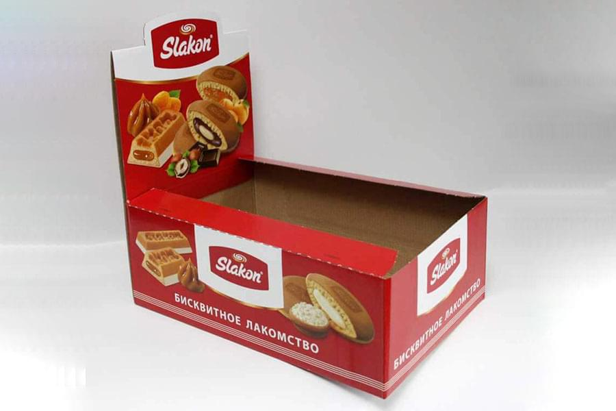
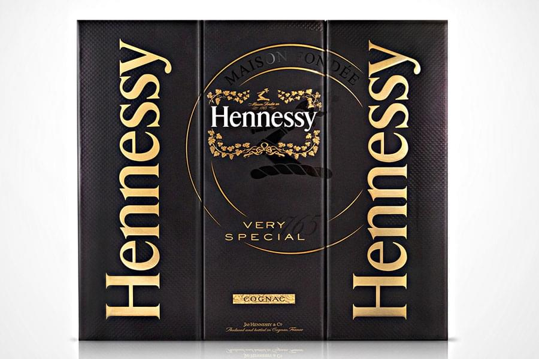
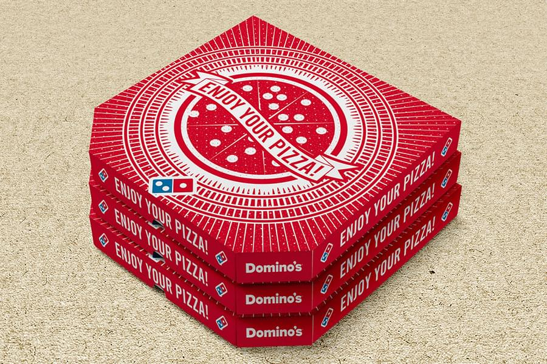
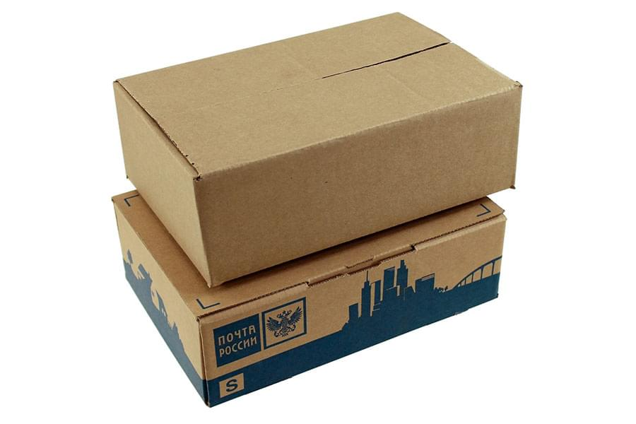
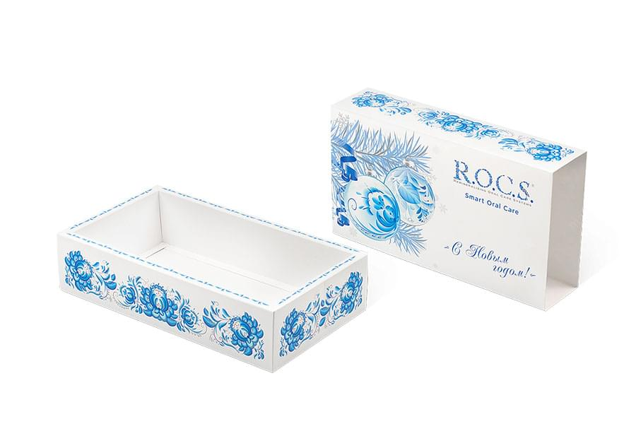

<!--#set var="title" value="Упаковка из микрогофрокартона • НекстПринт" -->
<!--#include virtual="/parts/header.html" -->
<section class="brand">
    <div class="container">
        <div class="title title_cardboard"><h3>Упаковка из микрогофрокартона</h3></div>
        <div class="swiper-container mySwiper">
            <div class="swiper-wrapper">
              <div class="swiper-slide">
                <a data-fancybox="gallery" data-src="images/dist/cardboard-1.jpg">
                    
                </a>
              </div>
              <div class="swiper-slide">
                <a data-fancybox="gallery" data-src="images/dist/cardboard-2.jpg">
                    
                </a>
              </div>
              <div class="swiper-slide">
                <a data-fancybox="gallery" data-src="images/dist/cardboard-3.jpg">
                    
                </a>
              </div>
              <div class="swiper-slide">
                <a data-fancybox="gallery" data-src="images/dist/cardboard-4.jpg">
                    
                </a>
              </div>
              <div class="swiper-slide">
                <a data-fancybox="gallery" data-src="images/dist/cardboard-5.jpg">
                    
                </a>
              </div>
              <div class="swiper-slide">
                <a data-fancybox="gallery" data-src="images/dist/cardboard-6.jpg">
                    
                </a>
              </div>
            </div>
            <div class="swiper-pagination"></div>
            <div class="swiper-button-prev"></div>
              <div class="swiper-button-next"></div>
        </div>
        <p>
            <strong>Упаковка из микрогофрокартона</strong> имеет поверхность, которая идеально подходит для нанесения изображений различными методами:
        </p>
        <ul>
            <li><i class="fa fa-check"></i><h5>флексографической печатью;</h5></li>
            <li><i class="fa fa-check"></i><h5>ламинатом или УФ-лаком;
            </h5></li>
            <li><i class="fa fa-check"></i><h5>трафаретной печатью.</h5></li>
        </ul>
        <p>
            Продукция из картона имеет массу достоинств по сравнению с другими видами упаковочной тары. Такое решение подходит компаниям, которые заботятся об экологичности своей продукции, потому что она совершенно безвредна. В картонной упаковке товар будет надежно защищен от деформации при транспортировке. 
        </p> 
        <p>
            <strong>Собственная производственная линия</strong> позволяет нам оперативно быстро производить наилучшую упаковку из микрогофрокартона. Наша опытная команда работает на результат, поэтому итог работы удовлетворит любого клиента. У нас Вы можете заказать следующие виды упаковок из микрогофрокартона:
        </p>
        <ul>
            <li><i class="fa fa-check"></i><h5>картонные коробки-пеналы;</h5></li>
            <li><i class="fa fa-check"></i><h5>с усиленным дном;</h5></li>
            <li><i class="fa fa-check"></i><h5>самосборные;</h5></li>
            <li><i class="fa fa-check"></i><h5>коробки-дисплеи;</h5></li>
            <li><i class="fa fa-check"></i><h5>коробки чемоданчики;</h5></li>
            <li><i class="fa fa-check"></i><h5>гофрокороба.</h5></li>
        </ul>
        <p>
            Благодаря презентабельному внешнему виду данная разновидность упаковки применяется для недорогих и элитных изделий. Мы всегда рады проконсультировать Вас и оказать помощь в выборе наилучшего способа изготовления Вашей продукции.
        </p>
    </div> 
</section>
<!--#include virtual="/parts/consultation.html" -->
<!--#include virtual="/parts/footer.html" -->